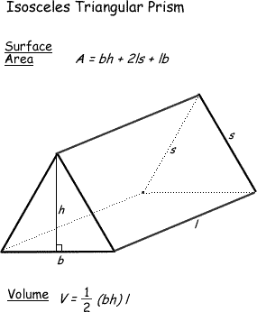

REKURZIJA
-
VAJA 55:
- V okolju za pisanje izvorne kode v jeziku Java, za prevajanje in za interaktivno delo zapiši program "TrikotnaPrizma". Stranico "s" izraèunaš na podoben naèin kot stranico "s" pri stožcu ali štiristrani piramidi v vajah uènih enot 52 in 54. Seveda pa si boš najbolj pomagal/a s sliko spodaj, ki ilustrira primer v vaji te uène enote
- Najprej èim bolj natanèno premisli in nato napiši natanèen potek reševanja naloge tako, kot smo to storili v uènih enotah 51 do 53.
- Zapiši izvorno kodo in jo shrani pod imenom "ImePriimek55.java". ImePriimek je seveda tvoje lastno ime in priimek.
- Datoteko "ImePriimek55.java" prevedi.
- Prevedeno datoteko zaženi, preveri rezultat v interaktivnem oknu in poklièi profesorja, da vidi rezultat.
- Sam/a skonstruiraj diagram poteka v tej uèni enoti in ga nariši v zvezek.
1. Vprašanja:
1.
2.
3.
4.
5.
6.
7.
8.
9.
10.
2. Zapiši od ene do pet kljuènih besed, ki povzemajo vsebino te uène enote.
3. Povezave do dodatnih informacij.
Gradiva na spletnih straneh fakultete za matematiko in fiziko v Ljubljani.
Spletni priroènik proizvajalca programskega okolja Java. To je podjetje Sun.
|